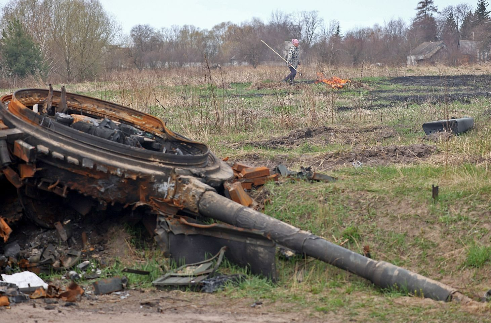

Мальовниче село Київської області!
Село Липівка - старовинне село. Здавна тут росло багато лип, з яких місцеві жителі виготовляли вулики. Село розташоване серед мальовничих пагорбів та зелених лісів, наше село завжди славилося родючими землями та працьовитими людьми.
Сьогодні Липівка — це сучасне село, яке зберігає свої традиції та культурну спадщину попри спроби російських загарбників вторгтися в рідну землю. Тут проживає близько 1200 жителів, які з любов'ю дбають про свою батьківщину.
Село розташоване в Київській області, у мальовничій долині річки Почепин, оточене лісами та полями. Унікальний мікроклімат робить село особливо привабливим.
Почепин — річка в Україні, у Макарівському районі Київської області, ліва притока Здвижу (басейн Дніпра).
Довжина річки 13 км, похил річки — 2,5 м/км. Формується з багатьох безіменних струмків та водойм. Площа басейну 63,0 км2.
Бере початок на південному заході від Наливайківки. Тече переважно на північний схід через Почепин, Липівку і впадає у річку Здвиж, праву притоку Тетерева.
Церква ЄХБ «Благовіст» у Липівці — це невелика баптистська церква, де люди разом моляться, читають Біблію та допомагають одне одному. Тут завжди раді новим гостям і підтримують усіх, хто звертається.
Річка Почепин — невелика, але мальовнича водна артерія, що протікає через село Липівка на Київщині. Її довжина становить приблизно 13 км, а площа басейну — 63 км². Річка бере початок на південному заході від села Наливайківка і впадає в річку Здвиж, яка є правою притокою Тетерева.
Липівська сільська рада, що розташована за адресою - вулиця Шевченка, 48, Липівка, Київська область, 08014
У селі є своє поштове відділеня, де люди отримують та віправляють пакунки або листи!
Укрпошта розташована за адресою - вулиця Шевченка, 52, Липівка, Київська область, 08014
Липівка — старовинне село. Біля нього знайдено 7 курганів, які свідчать про жорстокі бої, які тут відбувалися. Археологи виявили й кам'яні шліфовані молотки, крем'яні ножі, пилки та стріли.
Перші письмові згадки про село Липівка пов'язані з «маєтностями так званими Ясинецькими» — власністю Івашенцевичів і належать до 1506 р.
Тривалий час входила до складу Макарівського ключа, її власниками були, зокрема, Макаревичі, Харленські, Щавінські, Грохольські, князі Любомирські. У 1768 році дідич, люблінський воєвода Антоній Любомирський поміняв Макарівський ключ на кілька сіл (зокрема, Уладівка), які належали Каєтану Росцішевському гербу Юноша. У липні 1768 року в селі побували козаки Івана Бондаренка.
Липівка село у 5 верстах від Андріївки та у 4 від Макарова, знаходиться при болотистому струмку Почепин, що утворює у селі невеликий ставок з водяним млином і впадає за селом у р. Здвиж. На цьому місці за старих часів росло безліч липових гаїв, що дали назву селищу. Тепер існують тільки їх залишки, що складаються з декількох дерев при церкві та у саду власників. Любов жителів до бджільництва також наводить на думку, що липи жителями зберігались та насаджувались для бджільництва. В околицях села знаходяться особливого роду невеликі могили. Вони розташовані групами, по 20 і більше. Їхній склад це частини: деревного вугілля, пісок і зола. Такої ж групи могили тягнуться на рівних відстанях одна від одної на відстані близько 3 верст, біля Маковищ і Копилова і на височині біля Гавронщини. Ті, що розташовані серед селянських полів згладжуються і знищуються. Жителів проживає православних 1076, католиків 34, євреїв. 28; По смерті декана Каетана Росцішевського близько 1780 року Липівка дісталася в спадщину його братові Казимирові, у роді якого постійно залишалася і нині належить правнучці його Людвіці Едмундовні, по чоловіку Страшинській, одна тільки садибна і польова земля, у просторі 538 десятин.; лісова ж як при Липівці, так і в хуторі Язвинці 1481 десятин продана нею в 1883 році полковникові Володимиру Онопрієнку. Крім того від неї ж різночасно починаючи з 1871 року придбали земельні наділи такі селяни: Омельчук Федір 60 десятин, Лещенко Дмитро 44, Силонька Федір 26, Божко, Ольховець, Іванченко, Левченко по 20 десятин; 4 селянина разом 6, Савченко 14 десятин. Селянин Пацан і міщанин Фонтані по 10 дес. Казимир Росцішевський був за Олександра I Київським губернським проводирем дворянства і вмів, як говорять, заслужити його особливу прихильність. У власницькому палаці Липівки знаходиться чудовий родовий архів, що залишився після Росцішевського: Декана і проводиря дворянства, що укладає в собі, по звістці Е. Руліковського, у додатках до пам'ятників Свенцицького, дуже цікаві кореспонденції латинських єпископів Залуського і Воловича й останнього Київського воєводи з ляхів Стемпковського. Для православних доступ в архів, само собою зрозуміло, утруднений, якщо вони не визнають зверхність польської культури. Про землеволодіння ми б скінчили на сказаному, якби не зустрічали в актах місцевої парафіяльної церкви, що існує тут ante saecula (з давніх часів), незрозумілого нам факту, що Липівка в 1732 році належала не до Макарівського маєтку, а православному чи можливо уніату Антонієві Щавинському, похованому з дружиною при церкві, у 1746 р. До церковної громади с. Липівки належать села: Лозовик та Почепин..
1825 р. в Липівці було відкрито церковно-приходську школу. Православна церква в Липівці була Покровською, мала 40 десятин землі, побудована старанням власника Липівки Ігнатія Трипольського, який похований з дружиною у самій церкві. До приходу належали села Лозовик, Королівка, Озерщина. Під час радянської влади церкву було зруйновано.
У січні 1918 р. в Липівці було встановлено радвладу, яка остаточно закріпилася з 1920 р. У 1920 р. було створено комнезам і земельний відділ, тоді ж — продовольчий комітет.
У травні 1925 р. організовано Загально-липівську землегромаду, у яку входили в 1928 р. 59 родин.
У 1929 р. було утворено 5 сільськогосподарських артілей, які в 1930 р. об'єдналися в одне господарство. Але багато селян не мало бажання вступати в колгосп. За опір було заарештовано як ворогів народу одноосібників О. І. Новицького, Ф. Л. Ольховця, службовця Л. І. Шевченка, бухгалтера Я. Я. Василенка та інших.
У 1937–1938 рр. в Липівці пройшла хвиля нових репресій. Були заарештовані та розстріляні П. І. Герасименко, К. Ф. Юхименко, І. Г. Юхименко, засуджені на різні строки ув'язнення П. П. Кузменко, О. І. Новицький, Ф. Л. Ольховець, Г. Ф. Омельчук, З. С. Ромашко, Л. І. Шевченко.
Незважаючи на сталінські репресії, липівці одностайно піднялися на боротьбу з ворогом у 1941 р. 350 жителів брали участь у боротьбі проти німецьких загарбників. За роки окупації з села було вивезено на рабську працю до Німеччини 125 юнаків та дівчат. 275 мешканців села нагороджені орденами та медалями, 161 — поліг смертю хоробрих. В пам'ять про їх безсмертний подвиг в Липівці встановлено пам'ятник воїнам Радянської армії та встановлено меморіальні дошки з їх іменами.
Голод 1947 р. був тяжким випробуванням для липівців. Вони рятувалися, як могли. Так, доведена до відчаю Г. Ф. Карпенко пішла за колосками на колгоспний лан і «нарізала на лану артілі ім. Ворошилова 8 кг колосків». Про це писала районна газета «Стахановець». Виїзна сесія нарсуду розглянула справу на місці і засудила громадянку Г. Ф. Карпенко відповідно до Указу Президії Верховної Ради СРСР від 8 вересня 1947 р. до ув'язнення у виправно-трудовому таборі на 8 років. Залишилися хворі батьки та малі діти.
У 1986 р. для переселенців із зони ЧАЕС будівельники з ялтинської фірми «Курорт-Буд» за три місяці побудували 93 будинки, куди було переселено 270 осіб.
У 1989 р. було побудовано новий ФАП. За останні роки в Липівці були споруджені дитячий садок, їдальня, будинок побуту, два магазини, лазня, заасфальтовано всі дороги. Село газифіковане і оснащене водогоном.
У 1994 р. колгосп «Прогрес» змінив форму власності на КПСП, а в 2002 р. було створено сільськогосподарський кооператив «Липівський».
На жаль, село Липівка, як і багато інших населених пунктів України, постраждало від російського вторгнення. У березні 2022 року воно перебувало під окупацією російських військ протягом трьох тижнів.
Під час окупації в Липівці були зафіксовані численні воєнні злочини. Зокрема, 11 березня 2022 року російські військові розстріляли місцевого жителя Івана Грималюка, який намагався захистити своє село. Чоловік був беззбройним і не становив загрози, але його вбили на очах у родини.
Наступного дня, 12 березня, під час спроби евакуації з села, колона з 14 автомобілів, у яких перебували близько 50 цивільних осіб, включаючи дітей, була обстріляна російськими військовими. Внаслідок обстрілу загинуло шестеро людей, серед них одна дитина, ще семеро отримали поранення.
Окупанти також вчиняли мародерство, знищували майно місцевих жителів і вбивали домашніх тварин. За свідченнями очевидців, російські солдати розстрілювали ферми, вбивали свиней, перепілок та іншу худобу, а також грабували будинки.
Ці події залишили глибокий слід у пам'яті мешканців Липівки. Незважаючи на пережите, село поступово відновлюється, а його жителі продовжують жити, зберігаючи пам'ять про загиблих і сподіваючись на справедливість.